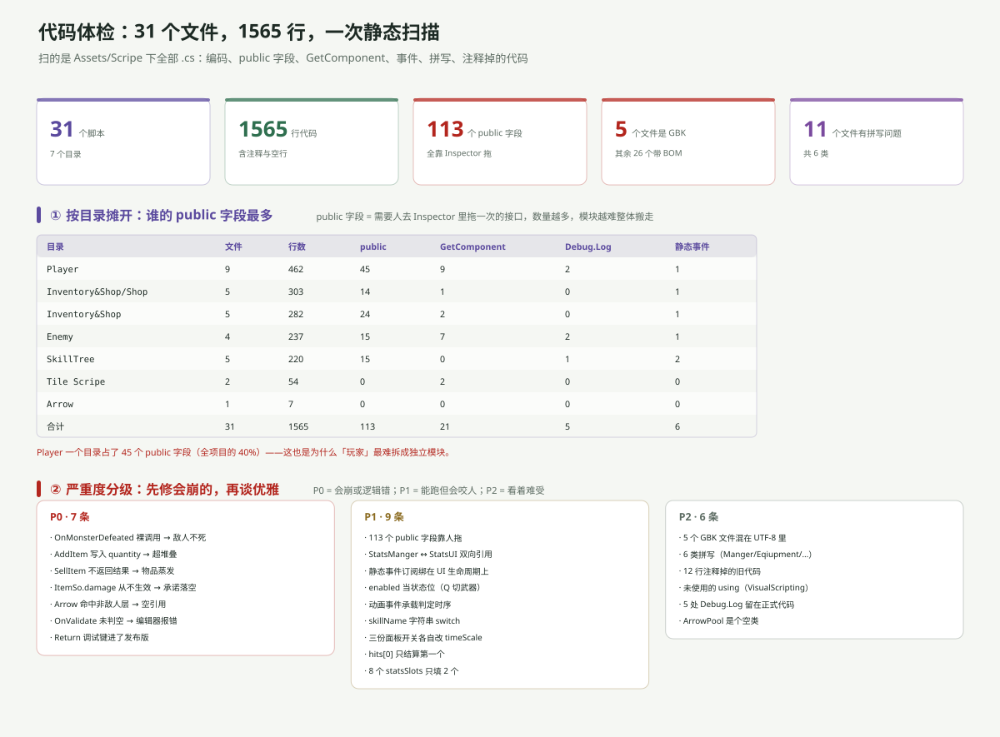

一句话说清
31 个文件里，真正会导致「玩起来不对」的只有 7 处（P0），剩下全是「能跑，但下次改会踩」的债。
先修 P0，再谈目录和命名。
怎么扫的
不是通读，是脚本扫。对 Assets/Scripe/**/*.cs 逐个做：
- 编码探测：先试 UTF-8 BOM → UTF-8 → GBK
- 计数：public 字段、
GetComponent、Debug.Log、static event、注释掉的代码行 - 拼写：拿一份可疑词表去比对（
Manger、Eqiupment、Colldown…） - 魔法字符串：
anim.SetBool("...")、CompareTag("...")、Play("...")
局限要说清楚：这是正则级扫描，不是编译器级语义分析。所以下面说的「会崩」是按代码路径推断，不是跑出来的。
五个总指标

| 指标 | 数值 | 含义 |
|---|---|---|
| 文件 / 行数 | 31 / 1565 | 含注释与空行，不是有效代码行 |
| public 字段 | 113 | 每一个都要人去 Inspector 拖一次 |
| GBK 文件 | 5 | 中文注释在 UTF-8 环境下是乱码 |
| 拼写问题 | 6 类 / 11 文件 | 不影响运行，影响「能不能搜到」 |
| 静态事件 | 6 组 | 分布在全项目唯一的事件骨架 |
113 个 public 字段是最能说明问题的数字：这个工程的接线方式，本质上是「人去 Inspector 里连」，而不是「代码里声明」。所以它没法整体搬迁——换个场景就得重连一遍。
按目录摊开
| 目录 | 文件 | 行数 | public | GetComponent |
|---|---|---|---|---|
Player | 9 | 462 | 45 | 9 |
Inventory&Shop | 10 | 585 | 38 | 3 |
Enemy | 4 | 237 | 15 | 7 |
SkillTree | 5 | 220 | 15 | 0 |
Tile Scripe | 2 | 54 | 0 | 2 |
Arrow | 1 | 7 | 0 | 0 |
Player 一个目录占了 45 个 public 字段（全项目的 40%），而它只有 462 行。这就是「玩家最难拆成模块」的量化原因。
反过来看 Enemy：237 行、7 处 GetComponent——它几乎不靠拖引用，全靠运行时找组件。两种风格在同一个工程里并存。
P0：七处会「玩起来不对」的地方
① 敌人打不死
Enemy/Enemy_Health.cs:26
if (currentHealth <= 0)
{
OnMonsterDefeated(expReward); // ← 裸调用，没有 ?.
Destroy(gameObject);
}如果这一刻没有订阅者（比如挂着 ExpManager 的 ExpCanvas 被 SetActive(false)），会抛 NullReferenceException，后面的 Destroy 永远不执行。
结果：血量已经 ≤ 0 的敌人还站着、还追人、还打人。
修法一个字符：OnMonsterDefeated?.Invoke(expReward);
② 背包格子能塞超上限
Inventory&Shop/InventoryManager.cs:56-58
int amountToAdd = Mathf.Min(itemSo.stackSize, quantity); // 算出来了
slot.itemSo = itemSo;
slot.quantity = quantity; // ← 却用了 quantity算出了「这次最多能放几个」，赋值时却用了总数量。stackSize = 3 时，一个空格能塞进 10 个。
顺带：这段 return 之后，下面的 if (quantity > 0) DropLoot(...) 几乎永远走不到——只有「所有格子都满了」才会溢出。
③ 卖东西会把物品吞掉
Inventory&Shop/InventorySlot.cs:44-45 + Shop/ShopManager.cs:54
// InventorySlot
activeShop.SellItem(itemSo);
quantity--; // ← 无条件减
// ShopManager
public void SellItem(ItemSo itemSo)
{
if (itemSo == null) return;
foreach (var slot in shopSlots)
if (slot.itemSo == itemSo) { inventoryManager.gold += slot.price; return; }
} // ← 找不到同款时静默返回，不通知调用方SellItem 返回 void，调用方无法知道成功与否。于是「卖一个这家店不收的东西」= 物品凭空少一个、金币不变。
修法：SellItem 改 bool，调用方按返回值决定要不要 quantity--。
④ ItemSo.damage 是个假字段
Inventory&Shop/Shop/ShopInfo.cs:28 会显示它：
if (itemSo.damage > 0) stats.Add("Damage+" + itemSo.damage.ToString());但 Inventory&Shop/UseItem.cs:7-16 的 ApplyItemEffects() 只处理了 currentHealth / maxHealth / speed / duration——damage 从来没被应用过。
也就是说：商店里挂一个「攻击力 +5」的道具，玩家买下、吃掉，攻击力一点没变，只有悬停框上写着 +5。
这条和「升级不加属性」是同一个病的两个症状：StatsManger.damage 全项目只有两处读（Player_Combat 打伤害、StatsUI 显示），没有任何一处写。
⑤ 箭打到「不是敌人的东西」就崩
Player/Arrow.cs:38-41
if ((enemyLayer.value & (1 << collision.gameObject.layer)) > 0)
{
collision.gameObject.GetComponent<Enemy_Health>().ChangeHealth(-damage);
collision.gameObject.GetComponent<Enemy_Knockback>().Knockback(...);
}只要 Enemy 层上出现一个没有 Enemy_Health 的物体（道具箱、可破坏物、忘了挂脚本的怪），这里就是空引用。
同一个问题在 Enemy_Combat.cs:28-29 也存在：hits[0].GetComponent<PlayerHealth>() 没有空判断。
⑥ OnValidate 会在编辑器里反复抛异常
SkillTree/SkillSlot.cs:21-26
private void OnValidate()
{
if (skillSO != null && skillLevelText != null) { UpdateUI(); }
}只判了两个，但 UpdateUI() 里还用了 skillIcon.sprite 和 skillButton.interactable。新建一个 SkillSlot 还没拖图标时，编辑器每次刷新都会抛 NullReferenceException。
Inventory&Shop/Loot.cs:16-19 一样：OnValidate → UpdateAppearance() 里用了 sr.sprite，没判空。
⑦ 发布版里按回车能白拿经验
Player/ExpManager.cs:22-25
private void Update()
{
if (Input.GetKeyDown(KeyCode.Return)) { GainExperience(2); }
}没有 #if UNITY_EDITOR。发布版玩家按住回车就能刷经验，而且 Time.timeScale = 0 也拦不住 Update——开着暂停面板照样涨。
P1：九处「能跑但咬人」的债
| # | 位置 | 问题 |
|---|---|---|
| 1 | 全项目 | 113 个 public 字段，换场景就要重拖 |
| 2 | StatsManger ↔ StatsUI | 数据层持有表现层引用，双向依赖 |
| 3 | ExpManager 挂在 ExpCanvas | 关 HUD 就退订，事件链断 |
| 4 | Player_ChangeEqiupment | 用 enabled 当状态位，拦不住直接调方法 |
| 5 | 6 个动画事件 | 判定时序写在 .anim 里，函数名写错不报错 |
| 6 | SkillManager | switch(skillName) 字符串匹配，加 SO 就要改代码 |
| 7 | 3 个面板 | 各自改 Time.timeScale，没有仲裁者 |
| 8 | Player_Combat / Enemy_Combat | hits[0] 只结算第一个 |
| 9 | StatsUI | 8 个 statsSlots 只填 2 个 |
P2：六处「看着难受」
- 5 个文件是 GBK（
ShopInfo/ExpManager/ShopSlot/SkillManager/Enemy_Health），其余 26 个带 BOM。中文注释在这 5 个文件里跨环境就是乱码。 - 6 类拼写，详见下一篇。
- 12 行注释掉的旧代码，最典型是
Enemy_Combat.cs:15-20整段OnCollisionEnter2D。 - 未使用的
using：PlayerMovement.cs引了Unity.VisualScripting，Arrow.cs引了UnityEngine.Experimental.GlobalIllumination——后者是个几乎没人用的命名空间。 - 5 处
Debug.Log留在正式代码里（含Enemy_Knockback里打印rb.velocity）。 Arrow/ArrowPool.cs是个空类，7 行、零成员、没人引用。
一句话总结
这个工程的代码质量是分裂的：Enemy 模块几乎不靠拖引用、运行时自己找组件；Player 模块 45 个 public 字段全靠人拖。两边都不是错，但混在一起就导致「同一个项目里有两套接线习惯」。
P0 那七处加起来改动量不到 30 行，但它们决定「玩起来对不对」。先把这 30 行改完，再谈目录。
下一篇：命名与拼写。